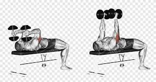
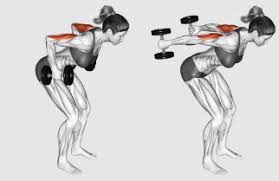
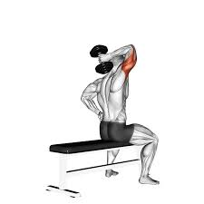

Cuando se evalúa una rutina de entrenamiento de tríceps, la que se presenta a continuación se destaca por su eficacia y enfoque estratégico. Incluyendo extensiones de tríceps recostado, patadas hacia atrás en banco, extensiones de tríceps a una mano y flexiones cobra para finalizar, esta rutina demuestra ser una fórmula ganadora para el desarrollo muscular.
Este ejercicio es un favorito por su capacidad para aislar y enfocar la cabeza larga del tríceps, la porción más voluminosa del músculo. Permite un estiramiento profundo y una contracción potente, maximizando el potencial de crecimiento.

A menudo subestimado, este movimiento es invaluable para la cabeza lateral del tríceps. Promueve una contracción máxima en el punto más alto del recorrido, y al realizarse en banco, se optimiza la estabilidad para una ejecución precisa.

Ya sea con mancuerna por encima de la cabeza o utilizando una polea, este ejercicio es excepcional para la cabeza larga del tríceps, trabajando el músculo a lo largo de un rango de movimiento completo y eficaz.

La inclusión de flexiones cobra como remate de la sesión es una estrategia inteligente. Aunque no son un ejercicio de tríceps tradicionalmente aislado, activan los tríceps de una manera diferente y funcional. Contribuyen a la estabilidad y fortalecen la conexión mente-músculo en un rango de movimiento que complementa los ejercicios de aislamiento, añadiendo un volumen extra de trabajo sin inducir una fatiga desmedida.
En conclusión, la rutina de tríceps analizada es un ejemplo de excelencia en la planificación del entrenamiento. Aborda las tres cabezas del tríceps con ejercicios variados y específicos, manteniendo un volumen de entrenamiento que maximiza el crecimiento muscular y prioriza la recuperación. Es una rutina completa y bien estructurada que, sin duda, contribuirá significativamente al desarrollo de unos tríceps fuertes y definidos.